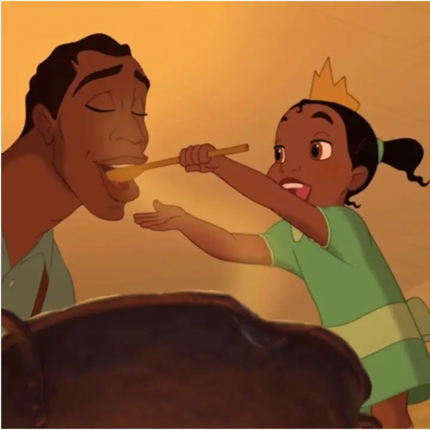
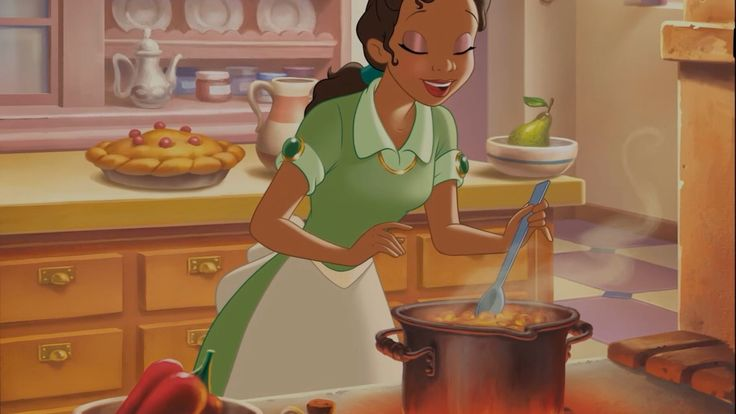

Bem-vindo ao restaurante da Tiana!
Receitas deliciosas inspiradas em New Orleans e no filme.

Beignets da Tiana
Os famosos bolinhos açucarados feitos pela Tiana.
Ingredientes:
- 2 xícaras de farinha
- 1 ovo
- 1/2 xícara de leite
- Açúcar de confeiteiro
Modo de preparo:
Misture tudo, frite em óleo quente e finalize com açúcar.

Gumbo de New Orleans
Um prato tradicional cheio de sabor.
Ingredientes:
- Frango
- Linguiça
- Temperos
- Arroz
Modo de preparo:
Cozinhe os ingredientes lentamente até formar um caldo saboroso.

Jambalaya
Um prato típico de New Orleans inspirado no filme.
Ingredientes:
- Arroz
- Frango
- Linguiça
- Pimentão
- Temperos
Modo de preparo:
Cozinhe os ingredientes juntos até o arroz ficar bem temperado e saboroso.
Vídeo do Filme
Interação com JavaScript
Clique no botão abaixo para mudar a cor do fundo.